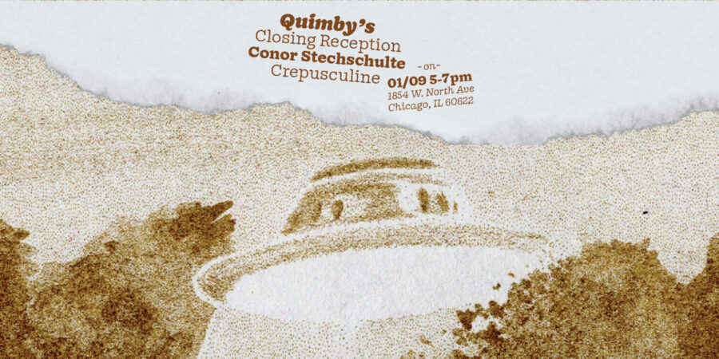

Conor Stechschulte: Crepusculine: Closing
Crepusculine Exhibition Closing Reception with Conor Stechschulte
Friday, January 9th, 2026 – 5:00-7:00pm in-person at Quimby’s Bookstore: 1854 W. North Ave, Chicago IL: 60622
Join Conor Stechschulte for the closing reception of original art related to the process and thinking behind his new comic, “Crepusculine 2.”
Conor Stechschulte is an Eisner-Nominated cartoonist, artist, screenwriter and educator. He is the author of the graphic novels The Amateurs and Ultrasound. His work has been translated into five languages and adapted for film. He teaches classes in comics, printmaking, and self-publishing at the School of the Art Institute of Chicago.